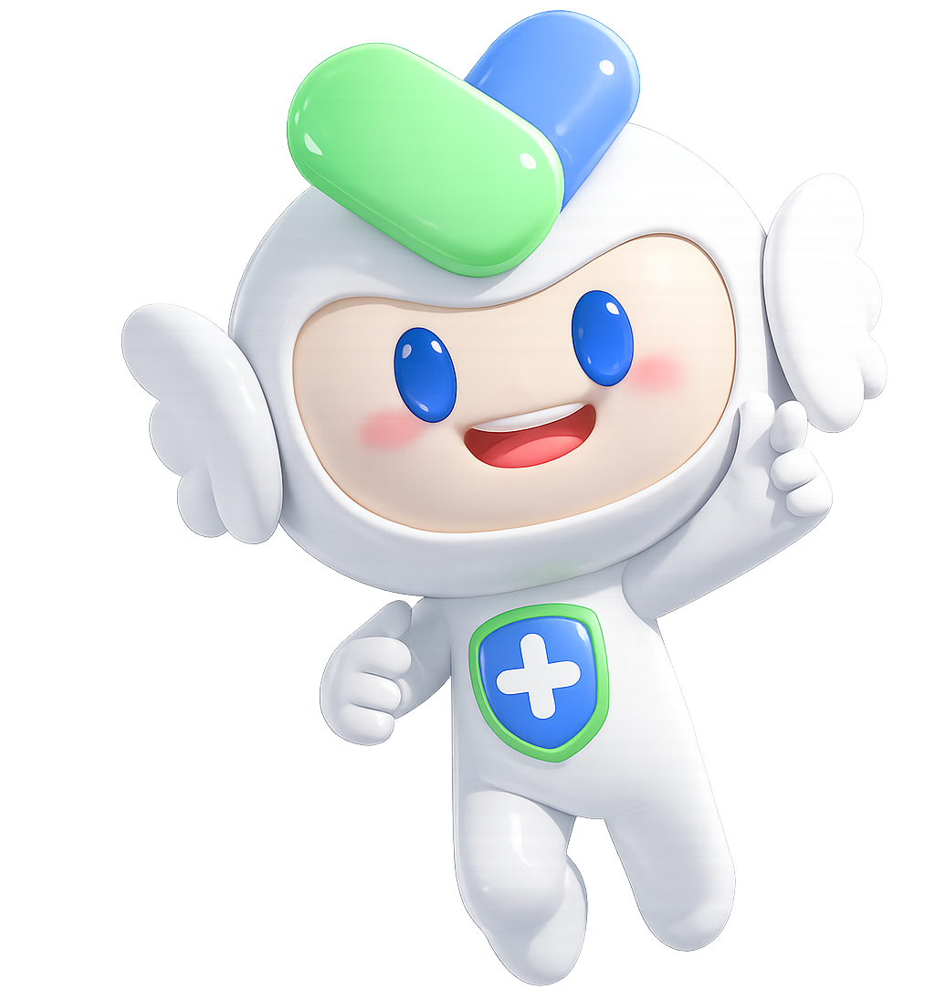

ស្វែងយល់ពីរាងកាយរបស់អ្នក
ចុចលើផ្នែកណាមួយនៃរាងកាយ ដើម្បីស្វែងយល់បន្ថែម

ដំណើររាងកាយរបស់អ្នក
ជ្រើសរើសប្រធានបទដែលចង់ស្វែងយល់
ការផ្លាស់ប្តូររាងកាយក្នុងវ័យជំទង់ 🌱
ដឹងពីរាងកាយរបស់អ្នក ស្រឡាញ់ចិត្ត និងទុកចិត្តលើការតាំច្រៃ 💛
តើវាជាអ្វី?
What is it?ការលូតលាស់រាងកាយគឺជាដំណើរការធម្មជាតិដែលរាងកាយរបស់អ្នកជំទង់ស្រី ផ្លាស់ប្តូរពីរូបរាងកុមារទៅជារូបរាងវ័យជំទង់។ រួមមាន កម្ពស់ ទម្ងន់ ស្បែក សុដន់ និងការអភិវឌ្ឍផ្សេងៗទៀត។
ហេតុអ្វីបានជាវាកើតឡើង?
នៅពេលចូលវ័យជំទង់ ខួរក្បាលបញ្ជូនសញ្ញាឲ្យរាងកាយចាប់ផ្តើមផលិតអរម៉ូន ដែលដឹកនាំរាងកាយឲ្យលូតលាស់ និងអភិវឌ្ឍតាមធម្មជាតិ។
តើចាប់ផ្តើមនៅពេលណា?
ភ្លេងស្រី៖ ៨ – ១៣ ឆ្នាំ
មនុស្សគ្រប់រូបលូតលាស់ខុសគ្នា។ អ្នកខ្លះចាប់ផ្តើមលឿន អ្នកខ្លះយឺត — ទាំងអស់សុទ្ធតែជារឿងធម្មតា។
ការផ្លាស់ប្តូរធម្មតានៅក្នុងស្រី
អ្វីដែលគួរធ្វើ?
ពេលណាគួរស្វែងរកជំនួយ?
ចំណាំសំខាន់
- 💖 មនុស្សម្នាក់ៗលូតលាស់ខុសគ្នា និងទុសឆ្នាំគ្នា
- ចាប់ផ្តើមមករដូវ ប្រកបដោយអារម្មណ៍ដែលធម្មតា
- 🤝 ប្រសិនបើមានចម្ងល់ សូមនិយាយជាមួយឪពុកម្តាយ ឬអ្នកជំនាញដែលអ្នកទុកចិត្ត
តើវាជាអ្វី?
What is it?ការលូតលាស់រាងកាយគឺជាដំណើរការធម្មជាតិដែលរាងកាយរបស់អ្នកជំទង់ប្រុស ផ្លាស់ប្តូរពីរូបរាងកុមារទៅជារូបរាងវ័យជំទង់។ រួមមាន កម្ពស់ សាច់ដុំ សំឡេង និងការអភិវឌ្ឍផ្សេងៗទៀត។
ហេតុអ្វីបានជាវាកើតឡើង?
នៅពេលចូលវ័យជំទង់ ខួរក្បាលបញ្ជូនសញ្ញាឲ្យរាងកាយចាប់ផ្តើមផលិតអរម៉ូន ដែលដឹកនាំរាងកាយឲ្យលូតលាស់ និងអភិវឌ្ឍតាមធម្មជាតិ។
តើចាប់ផ្តើមនៅពេលណា?
ភ្លេងប្រុស៖ ៩ – ១៤ ឆ្នាំ
មនុស្សគ្រប់រូបលូតលាស់ខុសគ្នា។ អ្នកខ្លះចាប់ផ្តើមលឿន អ្នកខ្លះយឺត — ទាំងអស់សុទ្ធតែជារឿងធម្មតា។
ការផ្លាស់ប្តូរធម្មតានៅក្នុងប្រុស
អ្វីដែលគួរធ្វើ?
ពេលណាគួរស្វែងរកជំនួយ?
ចំណាំសំខាន់
Summary- 💙 មនុស្សម្នាក់ៗលូតលាស់ខុសគ្នា និងទុសឆ្នាំគ្នា
- 🔵 ការផ្លាស់ប្តូរសំឡេង និងសាច់ដុំ ជាផ្នែកនៃការវិវត្តធម្មតា
- 🤝 ប្រសិនបើមានចម្ងល់ សូមនិយាយជាមួយឪពុកម្តាយ ឬអ្នកជំនាញដែលអ្នកទុកចិត្ត